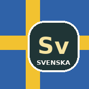

Svenska
Swedish Studies as an app on the iPad
Install on the iPad (once)
- Open this page in Safari (or Chrome on iPadOS 16.4+).
- Tap the Share button ⬆︎ — in Chrome it is in the top-right corner.
- Choose Add to Home Screen → name it Svenska → Add.
- Open Svenska from the home screen: full screen, a tab bar at the bottom (Idag, Arena, Uppdrag, Läsa, Kemi), and it works offline after the first visit.
Good to know
- The app keeps its own progress, separate from the browser. If you already practised in the browser: Parent corner → Backup → Download backup in the browser, then Restore inside the app.
- Best Swedish voice: iPad Settings → Accessibility → Spoken Content → Voices → Swedish → download Alva (Premium).
- Allow the microphone when the app asks (for the 🎙 speaking step).